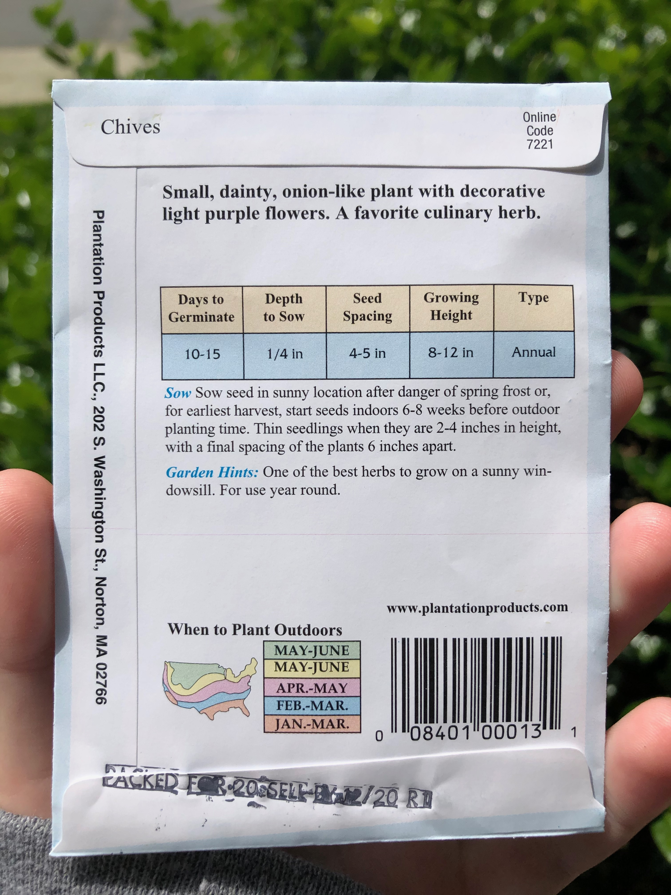

Your Garden
It took a lot of trial and error for me to get my plants to look the way they want. Even if you follow the care instructions, things can still go wrong.
Let’s pretend you have no idea how to garden and you want to start your own garden. I have attempted to lay out some steps that will help you through your process.
Now is the time to consider the following:
Planting
Pay special attention to the potting instructions on the back of the seed packets. This is how you are going to know
Below is an example of the back of a seed packet
Each seed will have information on how big they may grow (this is important when picking your pot size), how deep you should plant the seeds, how often to water/what consistency the soil should be, how often to fertilize, and how long until you will see germination.
When picking a pot, look to see how big the plant has the possibility to grow, finding a pot that is big enough for a fully-grown plant is always ideal. However, you can always start a seed in a small pot and replant it later on. With some vegetables, growing instructions insist of starting your seed in a small pot and transferring them later on once they have matured.
The actual potting of the seeds is the simple part. Once you have chosen a pot, fill it with soil and insert seeds to the depth of whatever the seed packet instructs. Adding fertilizer to your soil is something I didn’t do until last summer and my plants thrived. Seed packets will also instruct you on how often to fertilize your plants. Below are two examples of fertilizer that I have used
From there on, follow the watering directions as instructed. Seeds range in how long they will take to germinate and this information is usually on most seed packets. Don’t be too worried if you don’t see germination right away or even in the time expected. Seeds tend to grow at different times, some of my sunflower stems got to be 2 inches tall in the time that it took others to break the soil surface!